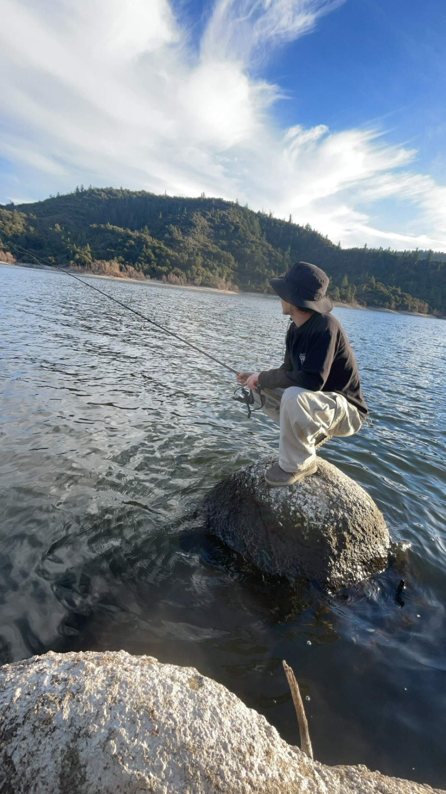

Selected works
GustavoGarcia
UC San Diego · Electrical Engineering
Robotics · Machine Learning · Controls
Portfolio2026
Selected works
UC San Diego · Electrical Engineering
Robotics · Machine Learning · Controls
Electrical Engineering and Mathematics–Computer Science at UC San Diego, focused on intelligent machines.
I’m Vice President of Engineering at Triton Droids, leading software, electrical, and mechanical teams across two generations of humanoid robots.
My work spans bipedal locomotion, actuator modeling, vision-language-action policies, reinforcement learning, and sim-to-real robotics.
Gustavo Garcia · UC San Diego
My work explores how robots can learn useful physical behavior from demonstrations, simulation, and interaction.
Teleoperation data and policy training for a complete coffee-making sequence.
Fine-tuning and comparing smolVLA, ACT, and π0.5.
GPU-accelerated reinforcement learning with 2,048 parallel rollouts.
Motion-imitation policies that qualified in the Top 32 of the Ultimate Robot Knockout League.
An open, single-GPU self-improvement pipeline for a lightweight VLA.



Let’s build something that moves.
For research, robotics, and engineering conversations: